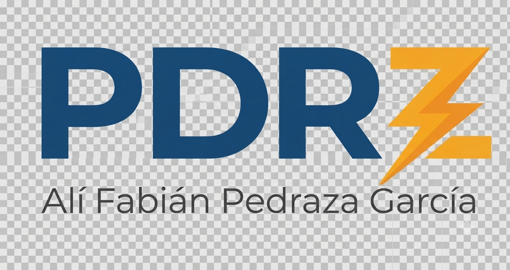

Formación técnica desde planta
Lo que no vieneen el manual
Cursos de mantenimiento eléctrico industrial armados con casos reales de una planta en operación: protecciones, subestaciones, variadores y análisis de fallas. Sin teoría de relleno.
Cursos
Actualizado conforme se grabanQuién imparte
Soy Alí F Pedraza G, ingeniero mecánico electricista con maestría en administración energética. Llevo años al frente del depto. de mantenimiento eléctrico en la industria azucarera de México, coordinando tareas operativas y de mantto en campo a equipos y sistemas eléctricos, gestionando recursos financieros para ejecución de proyectos y mantto planificado, así como administrando recursos humanos y económicos según las necesidades y prioridades basados en la teoría de mantto de precisión, monitoreo por condición, gestión de activos, etc...
Enseño lo que uso: Este curso está enfocado en el día a día de una industria de uso y demanda pesada para el ámbito eléctrico como lo es la industria azucarera de México, el enfoque es práctico, todo aquello que no viste en el salón de clases, en la libreta o la IA.